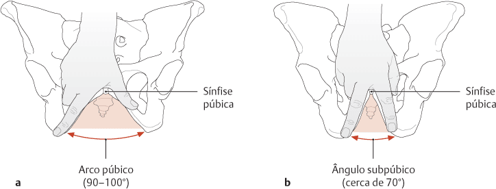

Articulados entre si, através da sínfise púbica anteriormente, e do sacro posteriormente, os ossos do quadril constituem a pelve óssea.
O estreito superior da pelve, no nível das linhas arqueadas, divide a pelve numa porção superior, a pelve maior (ou falsa) e outra inferior, a pelve menor (ou verdadeira).
A pelve maior abriga órgãos abdominais, enquanto que a pelve menor abriga órgãos do sistema genital e partes terminais do sistema digestivo.
NETTER: Frank H. Netter Atlas De Anatomia Humana. 8 ed. Rio de Janeiro: Elsevier, 2024.
A pelve masculina (a – na figura) tende a apresentar ossos mais pesados, com relevos mais salientes e cavidade pélvica (pelve menor) mais profunda.
O estreito superior apresenta-se com a forma de “copas” de baralho e o ângulo subpúbico é mais agudo, sendo menor que 90°.
Na pelve feminina (b – na figura), os ossos são mais leves e delicados, com relevos menos salientes e cavidade pélvica mais rasa.
As distâncias entre as espinhas isquiáticas e entre as tuberosidades isquiáticas são maiores que no sexo masculino.
Além disso, na mulher, o estreito superior é redondo ou oval e o ângulo subpúbico é maior que 90°.
Nem sempre, entretanto, estas diferenças são marcantes.

SCHUNKE, M. Prometheus, Anatomia geral e sistema locomotor. 4 ed. Rio de Janeiro, Guanabara Koogan, 2019.